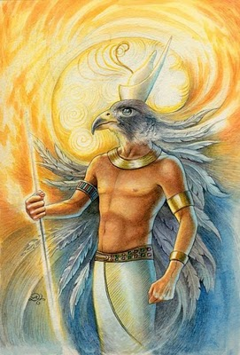

Carians

Como os Felinos originais, os primeiros Carians chegaram neste universo
quando ele foi criado. Um grupo de 45 veio atender ao chamado dos
Fundadores deste universo para dar ajuda assistencial e supervisionar o
Jogo Universal.
Os Fundadores deram aos Carians um novo planeta na constelação de Órion para sua morada. Ele era mais tropical no design e com abundantes matas úmidas e brejos. Também tinha mais ilhas que grandes areas continentais.
Como os felinos, eles eram etéricos e, depois, foram desenvolvendo os corpos físicos através de formas de vida que evoluíam na superfície do planeta. Claro que eles escolhem a forma de vida que poderia tornar-se um pássaro e através do período de centenas de milhares de anos, eles desenvolveram organismos de deferentes cores e tamanhos.
Os Carians eram conhecidos por sua singular criatividade para a plumagem colorida e assim criou corpos físicos que refeltiram seu talento criativo nesta área. É por isso que os Carians tem muito mais variedades de tamanho, forma e cor em suas raças que os felinos. Eles podem ter de 12 metros de altura a poucos centímetros apenas.
Também como os Felinos, o grupo original de 45 Carians manteve-se etérico e tornaram-se o Conselho que supervisionou e gerenciou o desenvolvimento dos seus irmãos e irmãs que escolheram encarnar no planeta como parte da modernização (upgrading) de suas formas físicas.
Quando seus veículos físicos tinham atingido um certo nível de desenvolvimento, que começou o cruzamento genético (algo que haviam aprendido com os felinos) com certos répteis que tinham evoluído nos pântanos e regiões mais quentes do planeta. O resultado deste programa genético foi a criação de uma nova raça híbrida conhecida para nós como os Draconianos. Eles eram parte Carians e parte Répteis.
Em um momento os Draconianos se tornaram mais abundantes na linha real de Aln, mais que os Carians puros. E como os Felinos, eventualmente, a Casa de Aln seria mais povoadas pelos Draconianos e seus primeiros derivados as serpentes voadoras (Cobras), que de Carians.
Até o momento da Primeira Terra, a Grande Experiência, a Casa deAlN foi liderada por uma serpente alada conhecida como Cobazar. Cobazar é o pai de Jehowah.
O Carians são conhecidos por suas acentuadas habilidades analíticas e competências organizacionais. Um traço predominante do caráter dos Carians é a sua necessidade de manter uma boa aparência e imagem em todos os momentos. Eles são bons jogadores em equipe, enquanto a estrutura da equipe envolve disciplina e estrito respeito aos códigos de conduta.
Você vai encontrar uma preponderância de Carians envolvidos na criação e manutenção de portais estelares, grades dimensionais e campos magnéticos em toda a nossa galáxia e Universo. Suas inerente habilidades analíticas torná-os bem adequados para este tipo de trabalho.
Eles também são conhecidos pelas suas capacidades militares e suas naves estelares são mais avançadas do que quaisquer outras no universo. Eles mantiveram a maioria dos postos militares durante a Primeira Terra, Grande Experiência. Foi um comandante Carian que deliberou sobre a grande frota de naves estelares e cruzeiros para a Federação Galáctica de Lyran, e da Casa Real de Avyon e ALN.
Os Fundadores deram aos Carians um novo planeta na constelação de Órion para sua morada. Ele era mais tropical no design e com abundantes matas úmidas e brejos. Também tinha mais ilhas que grandes areas continentais.
Como os felinos, eles eram etéricos e, depois, foram desenvolvendo os corpos físicos através de formas de vida que evoluíam na superfície do planeta. Claro que eles escolhem a forma de vida que poderia tornar-se um pássaro e através do período de centenas de milhares de anos, eles desenvolveram organismos de deferentes cores e tamanhos.
Os Carians eram conhecidos por sua singular criatividade para a plumagem colorida e assim criou corpos físicos que refeltiram seu talento criativo nesta área. É por isso que os Carians tem muito mais variedades de tamanho, forma e cor em suas raças que os felinos. Eles podem ter de 12 metros de altura a poucos centímetros apenas.
Também como os Felinos, o grupo original de 45 Carians manteve-se etérico e tornaram-se o Conselho que supervisionou e gerenciou o desenvolvimento dos seus irmãos e irmãs que escolheram encarnar no planeta como parte da modernização (upgrading) de suas formas físicas.
Quando seus veículos físicos tinham atingido um certo nível de desenvolvimento, que começou o cruzamento genético (algo que haviam aprendido com os felinos) com certos répteis que tinham evoluído nos pântanos e regiões mais quentes do planeta. O resultado deste programa genético foi a criação de uma nova raça híbrida conhecida para nós como os Draconianos. Eles eram parte Carians e parte Répteis.
Em um momento os Draconianos se tornaram mais abundantes na linha real de Aln, mais que os Carians puros. E como os Felinos, eventualmente, a Casa de Aln seria mais povoadas pelos Draconianos e seus primeiros derivados as serpentes voadoras (Cobras), que de Carians.
Até o momento da Primeira Terra, a Grande Experiência, a Casa deAlN foi liderada por uma serpente alada conhecida como Cobazar. Cobazar é o pai de Jehowah.
O Carians são conhecidos por suas acentuadas habilidades analíticas e competências organizacionais. Um traço predominante do caráter dos Carians é a sua necessidade de manter uma boa aparência e imagem em todos os momentos. Eles são bons jogadores em equipe, enquanto a estrutura da equipe envolve disciplina e estrito respeito aos códigos de conduta.
Você vai encontrar uma preponderância de Carians envolvidos na criação e manutenção de portais estelares, grades dimensionais e campos magnéticos em toda a nossa galáxia e Universo. Suas inerente habilidades analíticas torná-os bem adequados para este tipo de trabalho.
Eles também são conhecidos pelas suas capacidades militares e suas naves estelares são mais avançadas do que quaisquer outras no universo. Eles mantiveram a maioria dos postos militares durante a Primeira Terra, Grande Experiência. Foi um comandante Carian que deliberou sobre a grande frota de naves estelares e cruzeiros para a Federação Galáctica de Lyran, e da Casa Real de Avyon e ALN.